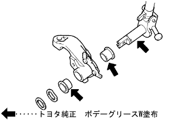
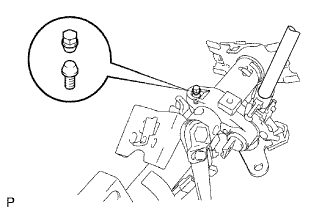
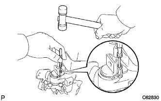
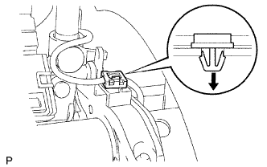

Column shift lever assembly |
| 1. Installation of column shift lever |
Attach a column shift control shaft.
|  |
Apply a body grease W to the control shaft and two bushs and attach it to the column shift lever.
Attach a wavesha and spacer.
 |
Use SST to attach a new snap ring.
Install the column shift shift shifting bell crank ASSY.
Apply a body grease W to the sliding surface of the Velcank ASSY and the shift lever.
In the bolt, attach the Berkank ASSY and the hanesconector bracket to the column shift lever.
Attach the steering column bracket ASSY UPR.
|  |
The steering column bracket Assy UPR and the column shift lever are temporarily attached with a new steering rock set bolt.
|  |
Use a ping -punch (φ3mm) and a hammer to hit a new steering lock pin into the steering column bracket ASSY UPR and column shift lever.
Tighten the steering lock set bolt until the screw is cut.
Attach a wire harness clamp and wire guide.
|  |
Attach the wire harness clamp to the seat of the shift lever retainer.
Attach the wire guide to the control shaft pin.